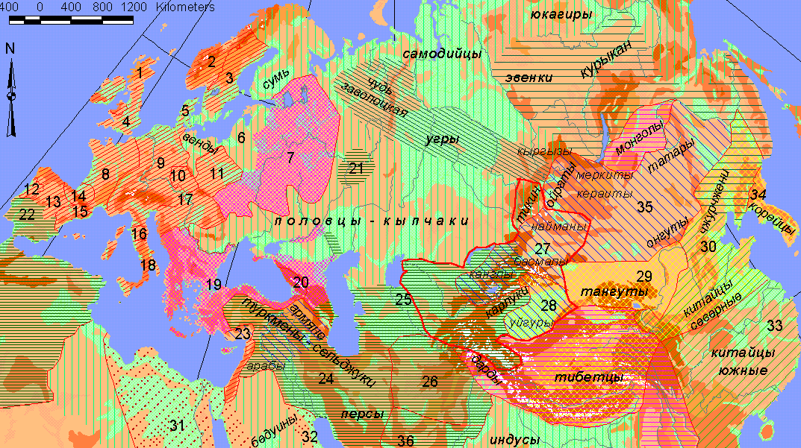
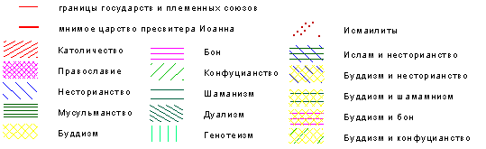

Л.Н. Гумилев. Поиски вымышленного царства.
Карта 3. Распространение религий в середине XII в. (English version)
|  |
| Условные обозначения |

 |

|
Общее замечание. Наряду с политической раздробленностью отчетливо выступает наличие этнокультурных массивов, определенных исповеданиями: римско-католический мир, православные страны и несторианская церковь, объединившаяся с якобитской (монофизитской) в 1142 г., делят христианство на три взаимно враждебных лагеря. Равным образом в странах мусульманских имеется два центра: суннитский халифат Аббасидов в Багдаде и исмаилитский халифат Фатимидов в Каире. Северный Китай охвачен буддизмом, Южный, империя Сун, - конфуцианством. Тибетский бон успешно соперничает с буддизмом и несторианством. В Сибири имеют место две разные религиозные системы; шаманизм у эвенков и дуализм у народов угорских. Былой генотеизм быстро уступает место мировым религиям.
Государства и племенные союзы:
- 1. Королевство Шотландия
- 2. Королевство Норвегия
- 3. Королевство Швеция
- 4. Королевство Англия
- 5. Королевство Дания
- 6. Прибалтийские народы: эсты, ливы, латыши, литва, пруссы
- 7. Великое княжество Русское
- 8. Королевство Франции
- 9. Священная Римская империя германских народов
- 10. Королевство Богемия
- 11. Королевство Польша
- 12. Королевство Португалия
- 13. Королевство Кастилия
- 14. Королевство Наварра
- 15. Королевство Арагон
- 16. Папская область
- 17. Королевство Венгрия
- 18. Королевство Сицилийское
- 19. Византийская империя
- 20. Царство Грузия
- 21. Великий Булгар (ханство)
- 22. Магриб (до 1147 г. эмират Альморавидов, потом халифат Альмохадов)
- 23. Царство Малая Армения
- 24. Султанат Великих Сельджуков
- 25. Шахство Хорезм
- 26. Султанат Гуридов
- 27. Ханство кара-китаев
- 28. Идыкутство Уйгурия
- 29. Царство Тангут
- 30. Империя Кинь (Цзинь)
- 31. Халифат Фатимидов
- 32. Племенной союз бедуинов Бахрейна
- 33. Империя Сун
- 34. Царство Корио
- 35. Племенной союз "цзубу"
- 36. Керман
Ссылки
Следующие страницы ссылаются на данную карту:
- Гумилёв Л. Н. Поиски вымышленного царства. Трилистник Птичьего Полета. 6. Прообраз героя легенды (1100≈1143).
- Гумилёв Л. Н. Поиски вымышленного царства. Трилистник Кургана. 7. Мужество и гибель "царя Давида" (1143≈1218).
- Гумилёв Л. Н. Поиски вымышленного царства. Трилистник Мыслена Древа. 14. Пространственно-временная схема, Историческая этнография.
Карта выполнена А. Родионовым в 2002 г.
Эта страница была последний раз обновлена 02/23/09.
|
|
06/10/20 - 03:44 |